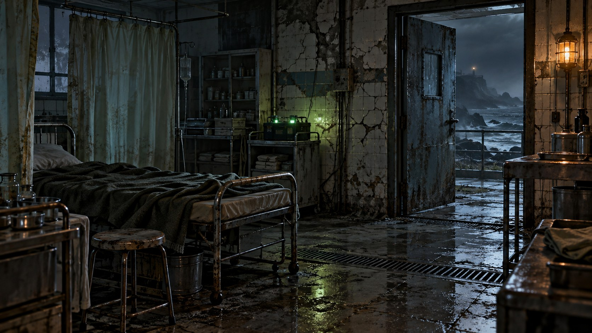

잔향
04:17
GLASS BAY / SURVIVAL ARCHIVE
탈출 준비
솔로
기록
엔딩
0/18
설정

ACT I / 깨어남
대피소 의무실
방송이 끝나기 전에, 이름을 되찾아야 한다.
대피소 · 기록 시각 04:17
00 / 36 행동
체력
100
단말기 침식
0%
동행
없음
부상 없음
현장 기록
REC 000
단말기 꺼내기 ↑
휴대 단말기
내려놓기 ×
단말기 / ECHO
비공개 연결
질문에 응답합니다. 많이 말할수록, 누군가 당신을 듣습니다.
↗
Enter 전송 · Shift+Enter 줄바꿈
×